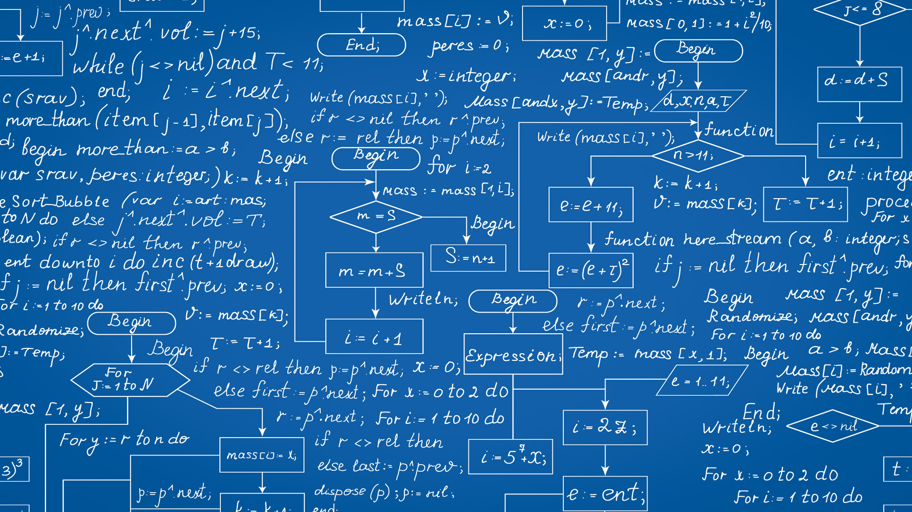

2020-3-1
21312

原创
图论
图论历史
一般认为，欧拉于1736年出版的关于柯尼斯堡七桥问题的论文是图论领域的第一篇文章[3]。此问题被推广为著名的欧拉路问题，亦即一笔画问题。而此论文与范德蒙德的一篇关于骑士周游问题的文章，则是继承了莱布尼茨提出的“位置分析”的方法。欧拉提出的关于凸多边形顶点数、棱数及面数之间的关系的欧拉公式与图论有密切联系，此后又被柯西等人[4][5]进一步研究推广，成了拓扑学的起源。1857年，哈密顿发明了“环游世界游戏”（icosian game），与此相关的则是另一个广为人知的图论问题“哈密顿路径问题”。 西尔维斯特于1878年发表在《自然》上的一篇论文中首次提出“图”这一名词[6]。 欧拉的论文发表后一个多世纪，凯莱研究了在微分学中出现的一种数学分析的特殊形式，而这最终将他引向对一种特殊的被称为“树”的图的研究。由于有机化学中有许多树状结构的分子，这些研究对于理论化学有着重要意义，尤其是其中关于具有某一特定性质的图的计数问题。除凯莱的成果外，波利亚也于1935至1937年发表了一些成果，1959年，De Bruijn做了一些推广。这些研究成果奠定了图的计数理论的基础。凯莱将他关于树的研究成果与当时有关化合物的研究联系起来，而图论中有一部分术语正是来源于这种将数学与化学相联系的做法。 四色问题可谓是图论研究史上最著名也是产生成果最多的问题之一：“是否任何一幅画在平面上的地图都可以用四种颜色染色，使得任意两个相邻的区域不同色？”这一问题由Francis Guthrie于1852年提出，而最早的文字记载则出现在德摩根于1852年写给哈密顿的一封信上。包括凯莱、肯普等在内的许多人都曾给出过错误的证明。泰特（Peter Guthrie Tait）、希伍德（Percy John Heawood）、拉姆齐和Hadwige（Hugo Hadwiger）对此问题的研究与推广引发了对嵌入具有不同亏格的曲面的图的着色问题的研究。一百多年后，四色问题仍未解决。1969年，Heinrich Heesch发表了一个用计算机解决此问题的方法。1976年，阿佩尔（Kenneth Appel）和沃夫冈·哈肯（Wolfgang Haken）借助计算机给出了一个证明，此方法按某些性质将所有地图分为1936类并利用计算机一一验证了它们可以用四种颜色染色。但此方法由于过于复杂，在当时未被广泛接受。 1860年之1930年间，若当、库拉托夫斯基和惠特尼从之前独立于图论发展的拓扑学中吸取大量内容进入图论，而现代代数方法的使用更让图论与拓扑走上共同发展的道路。其中应用代数较早者如物理学家基尔霍夫于1845年发表的基尔霍夫电路定律。 图论中概率方法的引入，尤其是埃尔德什和Alfréd Rényi关于随机图连通的渐进概率的研究使得图论产生了新的分支随机图论。
算法
reply